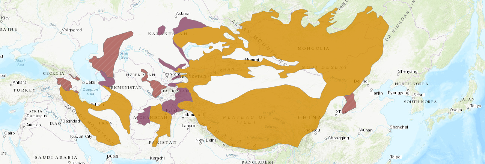

Среда Обитания Манула
Манулы обитают в суровых и отдаленных районах Центральной Азии, на высоте от 2 500 до 5 000 метров. Их среда обитания включает в себя разнообразные ландшафты.
Высокогорные Регионы
Манулы предпочитают высокогорные местности, где они могут встретиться как в горах , так и на плато. Эти области характеризуются холодным климатом и низкой влажностью.
Степи и Полупустыни
Манулы также встречаются в степях и полупустынных районах, где они могут обнаруживать свою добычу и охотиться.
Каменистые Пейзажи
Они адаптировались к каменистым и скалистым местам, используя свою ловкость и умение маскироваться среди камней.
Кустарники и Травянистые Участки
Они могут находить свои убежища в кустарниках, а также использовать травянистые участки в своей среде обитания.